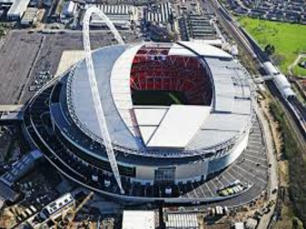
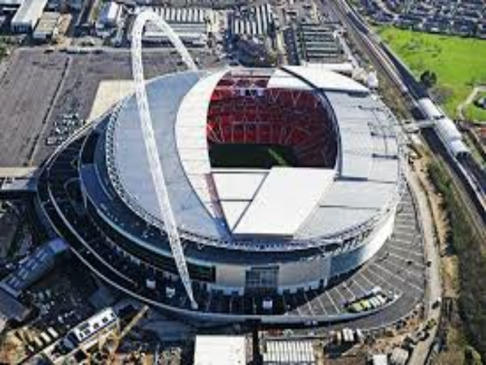
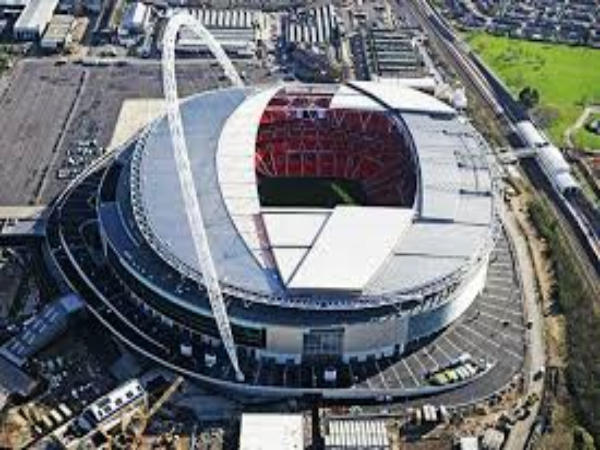

The O2 Arena, England Baku Crystal Hall, Azerbaijan
Baku Crystal Hall, Azerbaijan Cape Town Stadium, South Africa
Cape Town Stadium, South Africa Konya Buyuksehir Stadion, Turkey
Lords Cricket Ground, England
Konya Buyuksehir Stadion, Turkey
Lords Cricket Ground, England Stade Yves-du-Manoir, France
Stade Yves-du-Manoir, France The Mestella Stadium, Spain
The Mestella Stadium, Spain PGE Narodowy, Poland
PGE Narodowy, Poland Optus Stadium, Australia
Optus Stadium, Australia Antwerps Sportpaleis, Belgium
Antwerps Sportpaleis, Belgium Bursa Timsah Arena, Turkey
Wembley Stadium, London
Zenith Arena Lille, France
Bursa Timsah Arena, Turkey
Wembley Stadium, London
Zenith Arena Lille, France
Baku Crystal Hall, Azerbaijan
Cape Town Stadium, South Africa
Konya Buyuksehir Stadion, Turkey
Lords Cricket Ground, England
Stade Yves-du-Manoir, France
The Mestella Stadium, Spain
PGE Narodowy, Poland
Optus Stadium, Australia
Antwerps Sportpaleis, Belgium
Bursa Timsah Arena, Turkey
Wembley Stadium, London
Zenith Arena Lille, France
prev
next